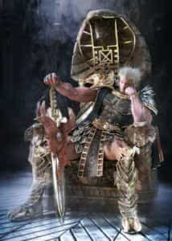

In this past article, I discussed how to present a strong and masculine face. Which is to say, I taught you how to manipulate your head’s body language for the purposes of making yourself appear strong, masculine, and confident.
While the head (and particularly the eyes) are the most “readable” part of your body, there’s obviously a whole lot more body to deal with, and that’s what this article will deal with.
The first issue that we will be dealing with with regards to the body is, of course, posture!
Posture
Posture shows and affects the attitude that you convey. Remember that body language is the sum of the parts of all the body. Think of it like this: the face shows the mood, and the body shows the intensity of the mood. Confidence starts at the face and spreads through the body
As with the face and head, you want to be tight, upright, and symmetrical. However, masculine and dominant body language with regards to the torso and limbs adds a new dimension, that of taking up space.
To put it very simply (and thus make it easy to understand and perform in your daily life), high status and confidence are reflected in an open and wide posture. And conversely, low status makes people shrink up, showing posture that is closed and prospective.
As you can see in the pictures below, posture that utilizes hunched shoulders, a drooping head, and inward chest shows weakness and a lack of commitment.
As the picture states, these pictures show the man to be nervous and unconfident
Even without seeing their heads, you can tell that these people are standing tall and proud
Throwing Your Weight Around
In the literal, not the metaphorical, sense.
Placing the weight evenly between the legs, while standing firm and upright, shows strength, confidence, and all of the masculine traits that you want to convey.
Hold your head high, chest open, and stomach in and tight. The feet and legs have to work in harmony with the torso, arms, and heads to convey a certain image. If you want to be seen as powerful, you must stand firm with your legs shoulder width apart and your chest puffed out.
Yours truly. Note the high chest and shoulder width legs
And don’t think that these rules only apply when you’re standing. When sitting down, the strong and confident man has his legs retain their shoulder length position, and the body is slightly leaned back and the arms are relaxed and neutral: not open, not closed.
While I hate to use the cliched animal metaphors that you so often see on hacky men’s websites (“be like a wolf, brah!”), it is fitting here: Imagine a lion, does he lean forward and make himself scarce? No, he reclines and stretches out, taking up space and showing who’s dominant.

Room To Breathe
A good rule of thumb to remember for strong body posture (i.e., the one thing you must remember) is to present your testicles—and yes, I’m being serious. Another way to put this rule of thumb is to ask, “Are my testicles breathing?” If you feel that your bits are being squashed together and are uncomfortable, you’re not taking up enough space.
Like this, except I’d advise you to not do this naked or with that particular facial expression
So beyond that rule that most men know instinctively, what else can be done with the body?
Arms
Seeing as the “ball rule” deals with the legs, and posture deals with the torso, the arms are all that is left. Luckily, this is probably the simplest to deal with: having them open too wide makes you look open, and welcoming, where as having narrow shoulders and arms clenched before your groin makes you look weak.
The key is arm neutrality, or occasionally arm crossing should you want to convey authority. Also bear in mind that palms facing downward shows authority (“the buck stops here” sort of thing), so if you want to gesticulate to make a point, your palms face downward. Bear in mind that crossing the arms will by definition put the palms downward.
All of the information above deals with the entire body for the most part, and can be instantaneously utilized to present superior body language.
There are many other moods and mindsets that can be expressed through body language, but a cool, masculine dominance is the gold standard of body language, so why would you bother learning anything else? Your body will naturally form any other emotions needed, so just try to maintain dominant body language as much as possible, and you’ll notice your life will markedly improve.
Read More: How To Present A Strong And Masculine Face